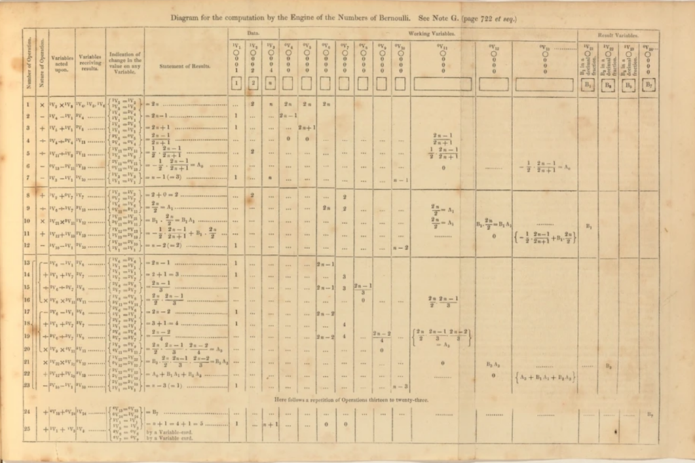

A primeira programadora da história
Augusta Ada Byron King, uma mulher inspiradora e pioneira da ciência da computação.
Quem foi Ada?
Augusta Ada Byron King, uma mulher inspiradora e pioneira da ciência da computação.
Ada Lovelace foi uma mulher extraordinária que desafiou os limites da sua época. Ela combinou a paixão pela poesia com a genialidade da matemática, e criou a linguagem dos computadores. Ela colaborou com Charles Babbage, um visionário que projetou a primeira máquina capaz de processar dados. Ada Lovelace imaginou que os computadores poderiam fazer mais do que apenas cálculos numéricos. Ela previu que eles poderiam criar música, arte e ciência. Ela foi a primeira a entender o potencial da tecnologia para transformar o mundo. Ela foi uma pioneira, uma inovadora e uma inspiração para as mulheres na tecnologia. Ela viveu apenas 36 anos, mas deixou um legado que dura até hoje.
Em 1842, o matemático e engenheiro italiano Luigi Federico Menabrea publicou um manuscrito em francês. Ada Lovelace dedicou cerca de um ano traduzindo o artigo, concluindo em 1843. Em suas anotações, Ada explorou o potencial da Máquina Analítica para impulsionar o progresso social, indo além dos simples cálculos. Ela também desenvolveu um algoritmo para que a máquina calculasse a Sequência de Bernoulli.Esse feito foi posteriormente reconhecido pela academia científica como sendo o primeiro programa de computador da história.
Nota G contendo o primeiro algoritmo de computador da história. Fonte: Note G © Magdalen College Libraries and Archives, Daubeny 90.A.11